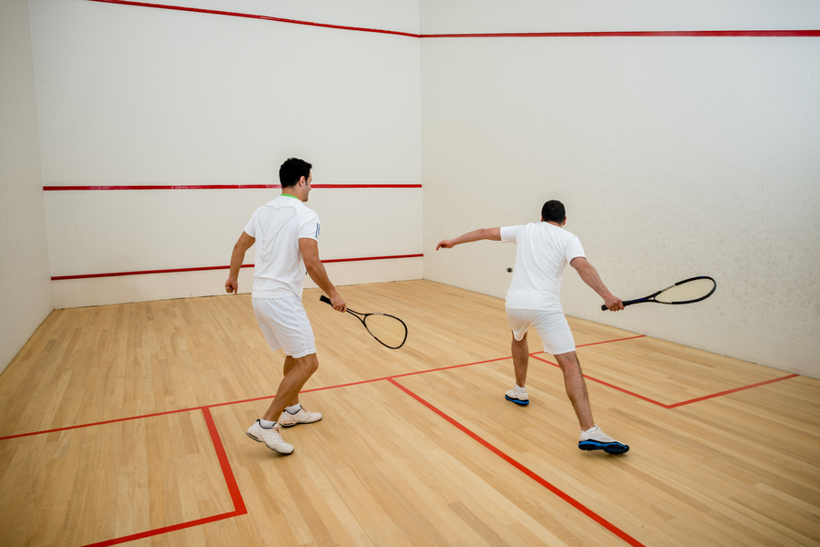
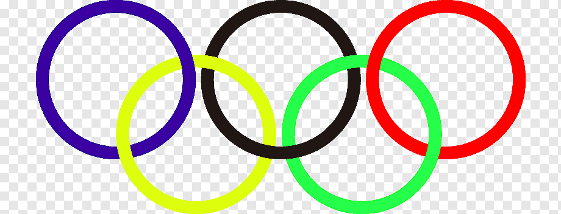
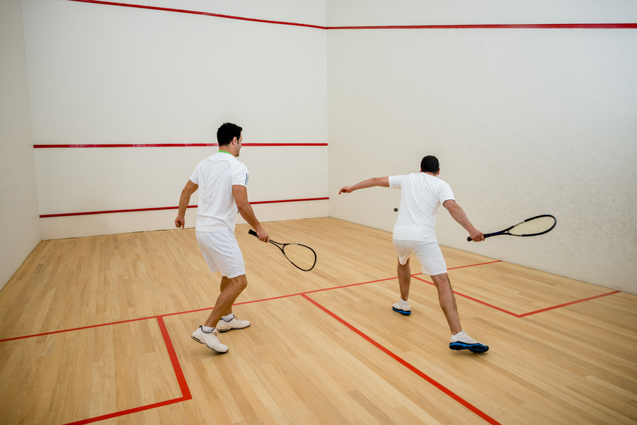
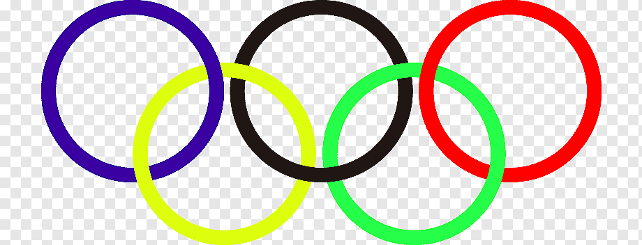

¡Disfruto de una variedad de actividades que me apasionan y me hacen feliz! Una de mis mayores pasiones es el deporte. Me encanta jugar fútbol con mis amigos los fines de semana. La emoción del juego y el compañerismo en el campo son experiencias que valoro mucho.
En mis ratos libres, me gusta explorar nuevas actividades como el squash, el senderismo y el ciclismo de montaña. Estas actividades me permiten mantenerme activo y disfrutar de la naturaleza mientras me desafío a mí mismo físicamente.
Cuando no estoy practicando deportes, me gusta relajarme escuchando música, leyendo libros o viendo películas. Disfruto de una amplia gama de géneros musicales y me encanta descubrir nuevas bandas y artistas.
En resumen, soy una persona activa y aventurera que disfruta explorando nuevas actividades y pasiones. Creo que es importante encontrar un equilibrio entre el trabajo y el ocio para vivir una vida plena y satisfactoria.